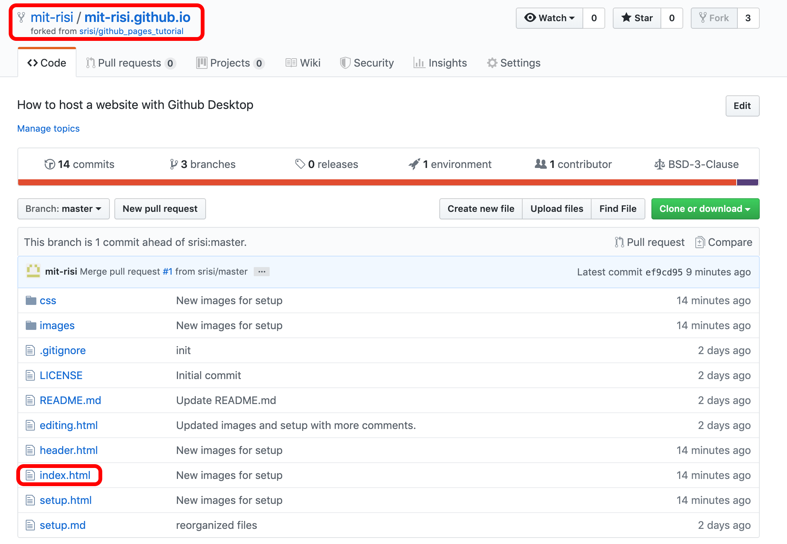
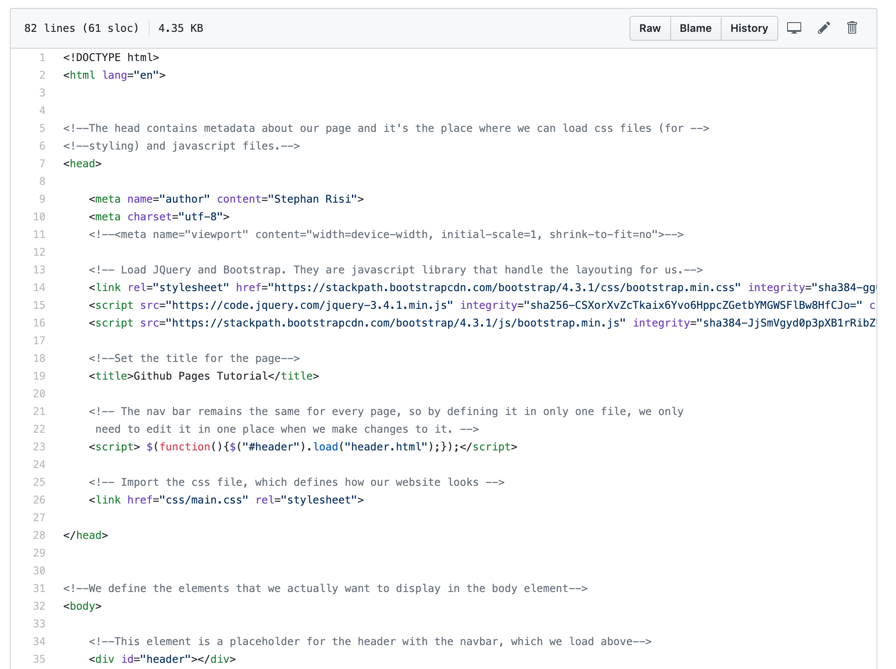
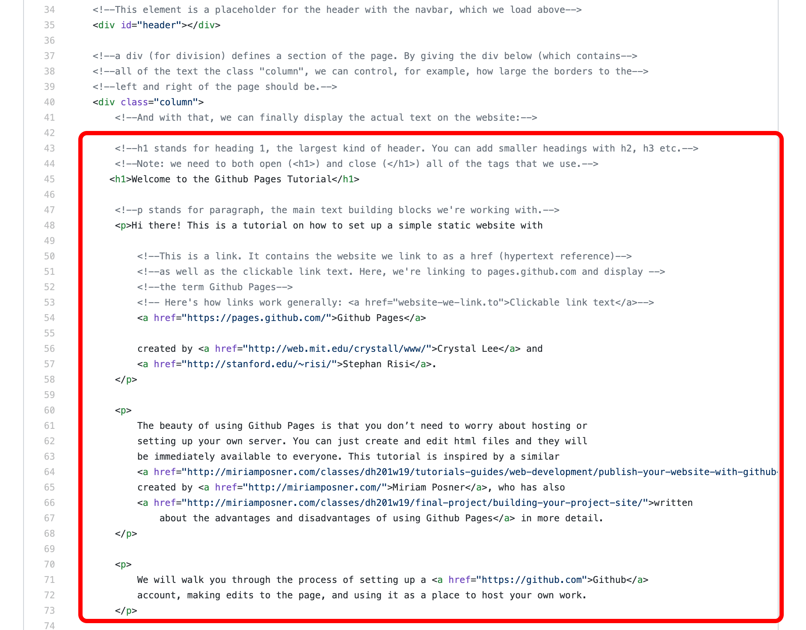
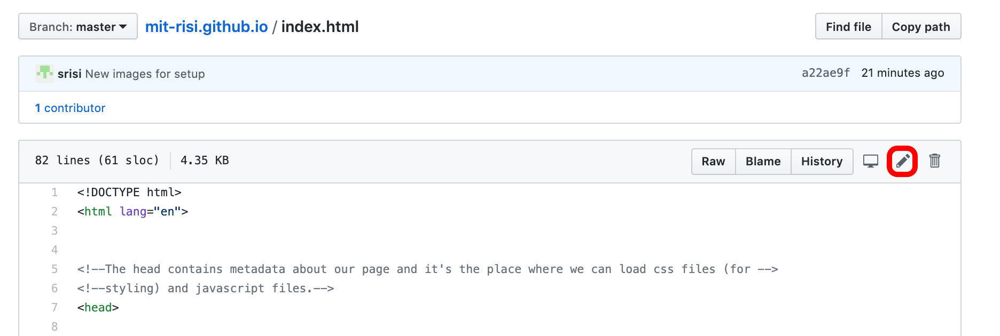
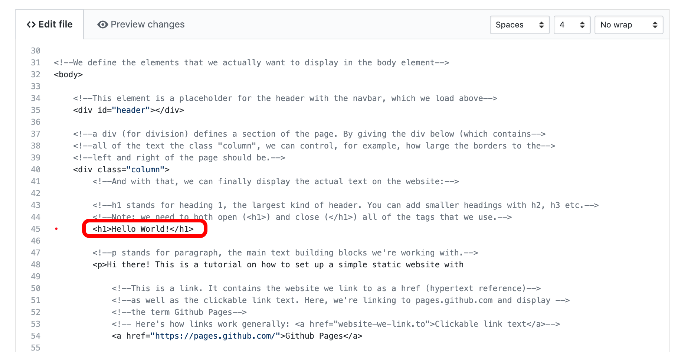
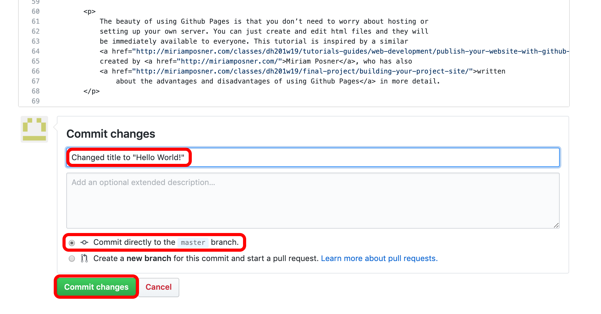
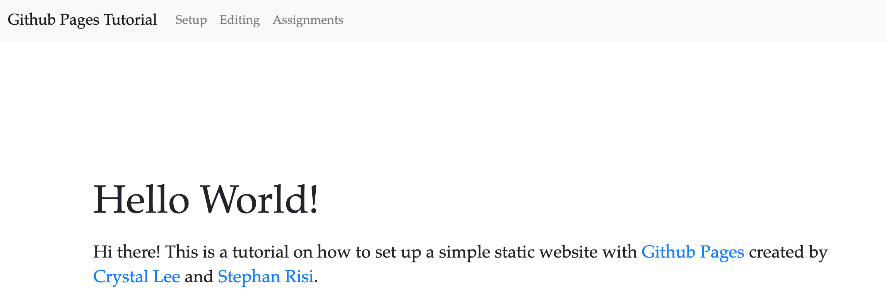

Having a website is fun. Changing it even more so.
There are many ways of modifying our website. We will focus just on the simplest ones here.
This is supposed to be your personal website or a project website, not a tutorial. So let’s change things around.
To get started, go to the github page for your repository. It will be at
github.com/<username>/<username>.github.io
Once you’re there, it should say
<username> / <username>.github.io at the top.
Then click on index.html. (Note: The list of files that you see in your repository probably differ from the screenshot below. I’m taking screenshots as I am adding new files to this tutorial.)

This shows you the code used to generate the landing page for your website. It is called index.html by default.
All the lines that start with <!-- and ends with --> are
comments that I have added to explain what’s going on.

Really, most of this is scaffolding. You can see the actual content of the website when you scroll down:

If we want to make changes to our website, we can simply click the edit button in the top-right corner. 
There’s no stopping us now!
Let’s change the main heading of the website to “Hello World!” in the long tradition of hello world programs .
To do this, scroll down until you see <h1>Welcome to the Github Pages Tutorial</h1>
Replace this line with
<h1>Hello World!</h1>

Next, let's store this change.
Before Github became the place to host websites, git (the technical tool) and Github (the website) were used to host code. More specifically, they allow programmers to save incremental changes and reset their code to safe points. If you have heard about “version control,” that’s what this means.
To keep track of the changes, Github expects you to write a short summary of the changes that you make at the bottom of the page.
For this project, always directly commit your changes to the master branch. Git gives you the option of creating multiple independent branches of your project which, is probably not what you want to get involved in (c.f. the ever relevant Randall Munroe).
When you’re happy with your changes and description, click “Commit changes.” 
Now go to your website at, <username>.github.io
Note: You may have to wait a minute or two for the change to show up on your website. You can also try
to force a "hard reload," which ignores files in your browser's cache by pressing Ctrl+R or Command+R.

Alright! You have just made the first change to your website.
The next section will teach you all of the basics of html that you need to know to display your first blog post.